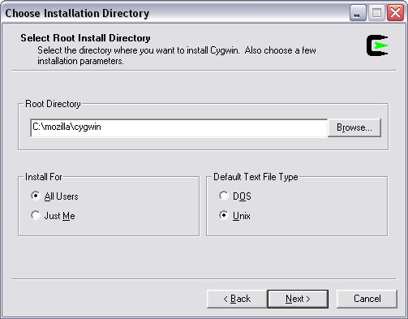
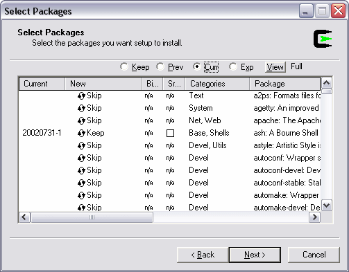

Note: This page used to be linked from Windows Build Prerequisites and should be again.
This article explains how to use Mingw to build Mozilla projects on Windows without using Microsoft Visual Studio, in 14 steps. The versions built using these instructions are debug builds.
You will need at least 3.7 GB of free disk space in order to download the source code and install the needed build tools, as well as to build the software.
All the tools and code will be located in C:\mozilla\, so create this directory first. From a command prompt, issue the command:
mkdir C:\mozilla\
Download the Cygwin tools for Windows. This is a special version of the GNU tools that runs on Windows:
Install the tools into C:\mozilla\cygwin\. Remember to choose Unix as the Default Text File Type.

In addition to the default modules, you need to install:
To select these optional installs, press the View button in the Select Packages part of the installer.

The following needed modules should be part of the default install, but you may wish to confirm that they're selected:
Netscape has modified a handful of the GNU command-line tools to solve some problems mostly for makefile compatibility with the GNU-styled UNIX builds.
Unpack the zip file into a temporary directory. Then start a Command Prompt in the temporary directory and do:
set MOZ_TOOLS=c:\mozilla\moztools mkdir c:\mozilla\moztools cd buildtools\windows install.bat
Download the following set of MinGW packages:
Using mingw-get is an easy and quick way to get these packages. Alternatively you can unpack all of the tar.gz files in c:\mozilla\mingw\. You can do this by placing all the tar.gz files in c:\mozilla\mingw\ and then starting a Command Prompt and doing the following:
cd c:\mozilla\mingw\ c:\mozilla\cygwin\bin\gzip -d *.tar.gz c:\mozilla\cygwin\bin\tar -xvf binutils-* c:\mozilla\cygwin\bin\tar -xvf gcc-core-* c:\mozilla\cygwin\bin\tar -xvf gcc-g++-* c:\mozilla\cygwin\bin\tar -xvf mingw-runtime-* c:\mozilla\cygwin\bin\tar -xvf w32api-* del *.tar
Create a file called mozset.bat in c:\mozilla\. The file should contain the following lines:
@echo off set MOZ_TOOLS=c:\mozilla\moztools set PATH=c:\mozilla\mingw\bin;c:\mozilla\cygwin\bin;%MOZ_TOOLS%\bin;%PATH% set HOME=c:\mozilla
Get ready to get the Mozilla source code. Issue the following commands at the command prompt:
cd c:\mozilla\ mozset.bat
Keep the command prompt open after doing this.
Since we're on a Windows platform we have to convert the Mozilla wintools header files into Unix format.
cd c:\mozilla\moztools\include\ dos2unix.exe *.h cd libIDL\ dos2unix.exe *.h
To build Firefox, the latest mozilla-central sources can be downloaded with mercurial:
cd c:\mozilla\ hg clone http://hg.mozilla.org/mozilla-central/ mozilla
If you want to build Thunderbird or Sunbird:
hg clone http://hg.mozilla.org/comm-central/ mozilla python client.py checkout
Now you have to create a file called .mozconfig in c:\mozilla\mozilla\ It should contain the following lines:
To build Mozilla Thunderbird in optimized mode:
. $topsrcdir/mail/config/mozconfig CC=gcc CXX=g++ CPP=cpp AS=as LD=ld ac_add_options --disable-accessibility
To build Mozilla Thunderbird in debug mode, that's with the debug information and console window:
. $topsrcdir/mail/config/mozconfig CC=gcc CXX=g++ CPP=cpp AS=as LD=ld ac_add_options --disable-accessibility ac_add_options --enable-debug ac_add_options --disable-optimize
To build Mozilla Firefox in optimized mode:
. $topsrcdir/browser/config/mozconfig CC=gcc CXX=g++ CPP=cpp AS=as LD=ld ac_add_options --disable-accessibility
To build Mozilla Firefox in debug mode, that's with the debug information and console window:
. $topsrcdir/browser/config/mozconfig CC=gcc CXX=g++ CPP=cpp AS=as LD=ld ac_add_options --disable-accessibility ac_add_options --enable-debug ac_add_options --disable-optimize
To build Mozilla Sunbird in optimized mode:
. $topsrcdir/calendar/sunbird/config/mozconfig CC=gcc CXX=g++ CPP=cpp AS=as LD=ld ac_add_options --disable-accessibility
To build Mozilla Sunbird in debug mode, that's with the debug information and console window:
. $topsrcdir/calendar/sunbird/config/mozconfig CC=gcc CXX=g++ CPP=cpp AS=as LD=ld ac_add_options --disable-accessibility ac_add_options --enable-debug ac_add_options --disable-optimize
Now build the bird! This will take a even longer than fetching the code; exactly how long depends on your system.
cd c:\mozilla\mozilla\ make -f client.mk
If you want to log all warnings and errors to a file you can do it by doing:
cd c:\mozilla\mozilla\ make -f client.mk > c:\mozilla\build.log 2>&1
The next time if want to update and build you can do this by doing:
cd c:\mozilla\mozilla\ hg update make -f client.mk
To start Mozilla Thunderbird:
cd c:\mozilla\mozilla\thunderbird\bin\ thunderbird.exe -console
To start Mozilla Firefox:
cd c:\mozilla\mozilla\dist\bin\ firefox.exe -console
Here are some helpful troubleshooting tips.
First of all make sure that you're using the correct tools.
cd c:\mozilla\ mozset.bat gcc -v
This should say gcc version 3.2.3 (mingw special 20030504-1). If it doesn't something is wrong.
cd c:\mozilla\ mozset.bat make -v
This should say GNU Make 3.80. If it doesn't something is wrong.
cd c:\mozilla\ mozset.bat uname --version
This should say uname (sh-utils) 2.0.15. If it doesn't something is wrong. Double check that the path to your Cygwin binary directory is set up correctly in mozset.bat.
make[4]: Entering directory `/cygdrive/c/mozilla/mozilla/nsprpub/config' sh /cygdrive/c/mozilla/mozilla/nsprpub/build/cygwin-wrapper cl -Fonow.obj -c -W3 -nologo -GF -Gy -MDd -Od -Z7 -UNDEBUG -DDEBUG_hege -UWINNT -DMOZILLA_CLIENT=1 -DDEBUG=1 -DXP_PC=1 -DWIN32=1 -D_DEBUG=1 -DWIN95=1 -D_PR_GLOBAL_THREADS_ONLY=1 -D_X86_=1 -DFORCE_PR_LOG /cygdrive/c/mozilla/mozilla/nsprpub/config/now.c exec: cl: not found
This error means that it can't find the file cl. The cl file is the Microsoft Visual C++ compiler. You want to be using the gcc compiler instead of the MinGW compiler.
Solution: Double check that the path to your Cygwin binary directory is set up correctly in mozset.bat. Also make sure that the mingw path is before the MOZ_TOOLS path.
If you're getting the error:
sys/cdefs.h: No such file or directory
Solution: Make sure that the mingw path is before the cygwin path.
Solution: [{{ mediawiki.external('#Convert the headers into Unix format|Convert') }} the moztools header files with dos2unix.
You see errors like this:
parse error before '*' token
Solution: [{{ mediawiki.external('#Convert the headers into Unix format|Convert') }} the moztools header files with dos2unix.
If you get this error:
"midl" c:/mozilla/mozilla/accessible/public/msaa/ISimpleDOMNode.idl "midl" not found
Solution: The following options don't yet work under gcc-on-win32 so you have to disable them:
ac_add_options --disable-accessibility ac_add_options --disable-activex
Currently the mingw headers and libraries don't emulate accessibility. Perhaps at a some point mingw will.
Some people have been having "vtable" problems when compiling. It says something like "variable vtable cant be auto-imported".
Solution: To fix this problem try adding the following to your .mozconfig:
LDFLAGS="-mwindows -Wl,--enable-runtime-pseudo-reloc"
If you're having problem with the icons not being shown in Mozilla Thunderbird, it's because you didn't choose Unix as the default file type when installing cygwin.
cd c:\mozilla\ mozset.bat mount
Then it must say:
C:\mozilla\cygwin\bin on /usr/bin type system (binmode) C:\mozilla\cygwin\lib on /usr/lib type system (binmode) C:\mozilla\cygwin on / type system (binmode) c: on /cygdrive/c type user (binmode,noumount)
The important thing is that it says "binmode" and not "textmode". Otherwise your icons will be corrupted.
Solution: Copy the chrome directory over from a "real" Mozilla Thunderbird build.
If you build Mozilla and it doesn't have a build ID, you should add the following to your mozset.bat file set:
MOZILLA_OFFICIAL=1 set BUILD_OFFICIAL=1